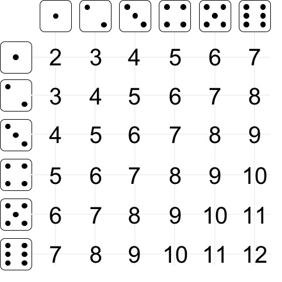

Definiciones básicas de probabilidad¶
34:29 min | Ultima modificación: Marzo 21, 2021 | YouTube
Definición de probabilidad como frecuencia¶
Espacio muestral: se define como el conjunto de todos los posibles resultados de un experimento.
Pregunta.— En la tirada de dos dados, ¿cuál es el espacio muestral?
Evento: Es cualquier colección de posibles resultados de un experimento (subconjunto del espacio muestral).
asseEn su forma más simple, el concepto de probabilidad puede interpretarse como la frecuencia con que ocurre un evento. Por ejempo, si en la tirada de dos dados se definen como un evento la cantidad de posibles resultados que dan una suma determinada, entonces:

Pr(𝑋= 2) = 1 / 36 Pr(𝑋= 6) = 5 / 36 Pr(𝑋=10) = 3 / 36
Pr(𝑋= 3) = 2 / 36 Pr(𝑋= 7) = 6 / 36 Pr(𝑋=11) = 2 / 36
Pr(𝑋= 4) = 3 / 36 Pr(𝑋= 8) = 5 / 36 Pr(𝑋=12) = 1 / 36
Pr(𝑋= 5) = 4 / 36 Pr(𝑋= 9) = 4 / 36
Pregunta.— Los soldados mediavales apostaban con dos dados de la siguiente manera: si el resultado es par {2, 4, 6, 8, 10, 12} ganaba el soldado A; y si el resultado es impar {3, 5, 7, 9, 11} ganaba el soldado B. ¿Quién tiene mayor probabilidad de ganar?
Propiedades y definiciones básicas sobre probabilidad¶
Todas las probabilidades deben estar entre \(0\) y \(1\):
Las probabilidades de eventos mutuamente exclusivos (no pueden ocurrir simultáneamente) y colectivamente exhaustivos (cubren todo el universo de casos posibles) deben sumar la unidad:
En las siguientes figuras, los eventos F1, F2 y F3, y V1 y V2 están definidos sobre el mismo universo; y son mutuamente exclusivos y colectivamente exhaustivos, tal que se cumplen las dos propiedades anteriores

Probabilidad conjunta¶
Los eventos considerados ocurren simultáneamente. En la siguiente figura, los eventos F1 y V2 ocurren simultáneamente (área sombreada de la figura), tal que su probabilidad conjunta es:

Probabilidad condicional¶
Es la probabilidad de que ocurra un evento sabiendo que el otro ya ocurrio. En la siguiente figura el evento V2 es condicionar a la ocurrencia F1. Noté que en la siguiente figura, el universo no es el rectángulo anterior que cubre todos los eventos, si no el evento F1. De esta forma, la probabilidad condicional es sólo la proporción de V2 que se intercepta con F1, la cual corresponde a la porción sombreada de la figura de abajo. La siguiente expresión matemática permite calcular la probabilidad condicional en términos de la probabilidad conjunta.
En otras palabras,
para dos eventos A y B.

Independencia¶
Si los eventos \(A\) y \(B\) son independientes, la probabilidad condicional del evento A dado que ocurrio el evento B es igual a la probabilidad del evento A:
De la definición de probabilidad condicional:
Entonces:
Probabilidad marginal¶
Sea \(X_1\) con \(i = 1, ... , n\) , un conjunto de eventos mutuamente exclusivos y colectivamente exhaustivos. La probabilidad de un evento \(A\) es:
En la siguiente figura se puede observar que para cualquiera de los tres eventos \(F_j\) (para \(j=1,2,3\))
y que para los dos eventos \(V_i\) (\(i=1,2\)):

Unión (OR)¶
Para dos eventos \(A\) y \(B\):
En la figura de abajo se observa que al unir las regiones de los eventos F1 y V2, las áreas se traslapan y por tanto hay que restar la intersección.
Complemento o negación¶
Probabilidad total¶
La probabilidad total indica que la probabilidad de un evento A puede calcularse como la probabilidad de que ocurran los eventos A y B simultáneamente más la probabilidad de que ocurran los evento A y not B (el complemento de B:
Para la siguiente figura:
La ecuación anterior puede expresarse en términos de probabilidades condicionales, tal que:
Teorema de Bayes¶
A partir de
Se obtiene que:
Despejando \(\text{Pr}(B \; | \; A)\),
En la última ecuación, se aplica el teorema de probabilidad total para el evento A.
Actividad.— Complete las siguientes tablas de probabilidades:
Probabilidades totales:
F1 F2 F3 Prob(V)
----------------------------------
V1 0.10 ? 0.03 ?
V2 ? 0.26 0.14 0.62
----------------------------------
Prob(F) ? ? ?
Probabilidades condicionales:
Prob(F|V) Prob(V|F)
F1 F2 F3 F1 F2 F3
---------------------- ----------------------
V1 10/38 ? ? V1 ? 25/51 ?
V2 ? ? 14/62 V2 ? ? ?
Actividad.— Verifique las dos tablas de probabilidades condicionales calculadas en el ejercicio anterior usando el teorema de Bayes (es decir, calcule Prob(V|F) a partir de Prob(F|V) y viceversa).